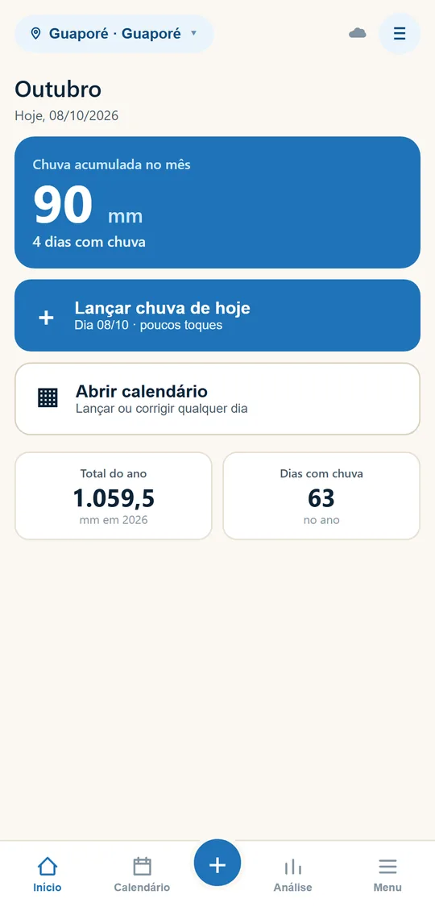
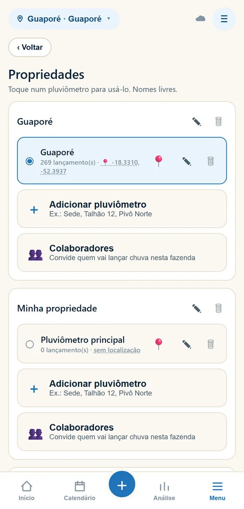
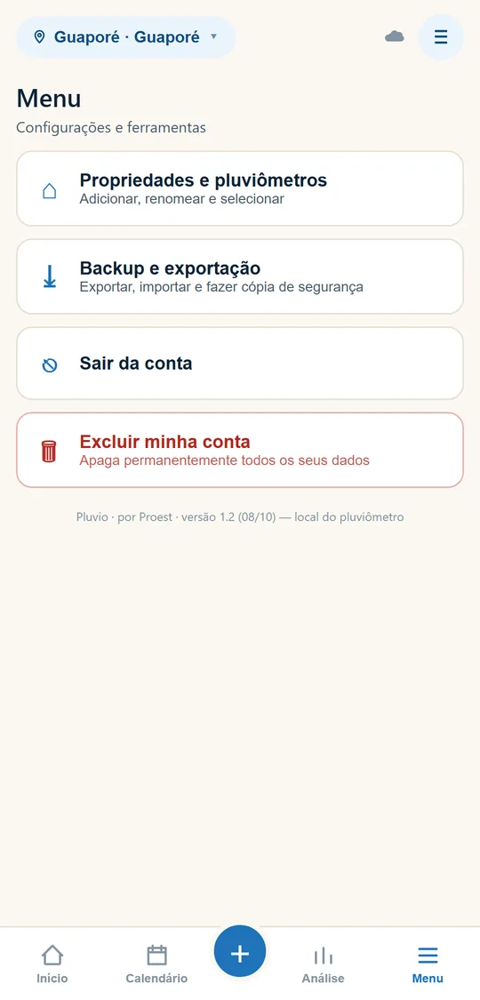

Como usar o Pluvio
Tudo o que você precisa no dia a dia. A barra de baixo leva às telas principais: Início, Calendário, ＋ (lançar), Análise e Menu.
Tela inicial
No alto aparece a fazenda e o pluviômetro em uso. Toque no nome para trocar.
- Chuva acumulada no mês e quantos dias choveu.
- Lançar chuva de hoje: o caminho mais rápido.
- Abrir calendário: para lançar ou corrigir qualquer dia.
- Embaixo, o total do ano e os dias com chuva.

Lançar a chuva
- Toque em ＋ (ou em Lançar chuva de hoje).
- Digite os milímetros. Use a vírgula para meio milímetro (ex.: 12,5).
- Toque em ✓ Salvar.
- Para outro dia, use as setas ‹ › ao lado da data.
- ☀ Sem chuva grava 0 mm: use quando quiser deixar claro que leu o pluviômetro e não choveu.
- Errou? Abra o mesmo dia e digite o valor certo. O novo substitui o anterior.

Localização do pluviômetro
A localização coloca o pluviômetro no mapa de chuvas. Só precisa ser gravada uma vez.
- Se o pluviômetro ainda não tem localização, ao salvar a chuva de hoje ou de ontem o app pergunta "Onde você está agora?"
- Junto do pluviômetro? Toque em 📍 Ao lado do pluviômetro. O GPS grava o local.
- Em casa, no escritório ou em outro lugar? Toque em 🏠 Em outro lugar. Nada é gravado.
Também dá para gravar a qualquer momento: Menu → Propriedades, parado ao lado do pluviômetro, toque em 📍. A pergunta aparece a partir da versão 1.2.

Calendário
- Cada quadrado é um dia: o número grande é a chuva (mm), o pequeno no canto é o dia do mês.
- A cor mostra a intensidade: do azul claro (chuva fraca) ao azul escuro (muito forte).
- Toque num dia para lançar ou corrigir.
- Use ‹ › para trocar o mês. Embaixo: total do mês, dias com chuva e a maior chuva em 24 horas.

Análise
- Visão anual: total do ano, mês mais chuvoso e mais seco, e um gráfico mês a mês.
- As barras azuis ficaram acima da sua média; as laranjas, abaixo. A linha tracejada é a sua média dos anos lançados.
- Histórico: compara os anos entre si.

Fazendas e pluviômetros
Em Menu → Propriedades e pluviômetros (ou tocando no nome, no alto da tela):
- Toque num pluviômetro para passar a usá-lo.
- Adicionar pluviômetro e Adicionar propriedade: os nomes são livres (Sede, Talhão 12, Pivô Norte).
- ✎ renomeia, 🗑 exclui, 📍 grava o local com o GPS.
- Colaboradores: convide a sua equipe. Veja Pluvio com colaboradores.

Sem sinal no campo
O Pluvio funciona normalmente sem internet. O lançamento fica guardado no celular e é enviado sozinho quando houver sinal.
A nuvem ☁, no alto da tela, mostra a situação:
- ☁ verde: tudo enviado.
- ⟳ laranja: enviando.
- ☁ cinza: sem internet. Os dados estão salvos no celular e serão enviados depois.
Toque na nuvem para atualizar na hora, por exemplo para ver o que a sua equipe lançou.
Importar histórico
Tem chuvas de anos anteriores em caderno ou planilha? Em Menu → Backup e exportação → Importar vários dias de uma vez, cole uma linha por dia com a data e os milímetros:
15/01/2024 12,5
Também aceita colar direto de uma planilha (coluna de data e coluna de mm) ou enviar um arquivo CSV. Os dados entram no pluviômetro selecionado; se um dia já tiver lançamento, o valor importado substitui o anterior.
Sua conta
- Sair da conta (Menu): use quando outra pessoa for usar o mesmo celular. Se aparecer aviso de lançamento não enviado, espere ter internet antes de sair.
- Excluir minha conta (Menu): apaga a conta e todos os dados de forma permanente.
- A versão do app aparece no rodapé do Menu.
